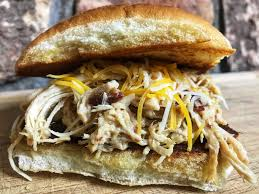

Chicken Bacon Ranch

This is one of my go to favorite meals. Makes enough for two people to have
multiple sandwiches. Includes a simple ranch coleslaw.
Ingredients
- 4 chicken breast
- 1 1/2 cups chicken broth
- 1 package ranch dressing mix
- 3oz real bacon bits
- 1 bag coleslaw mix
- ranch dressing
- bread
Steps
- Place chicken in the bottom of the crockpot
- Mix together ranch mix broth and bacon bits in a seperate bowl
- Mour mixture over the chicken
- Cook on low for 6-8 hours
- Shred chicken when cooked
- To make the coleslaw mix the coleslaw mix with some ranch to taste
- Top the chicken with the coleslaw on the bread